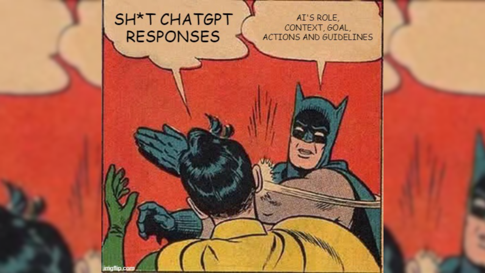
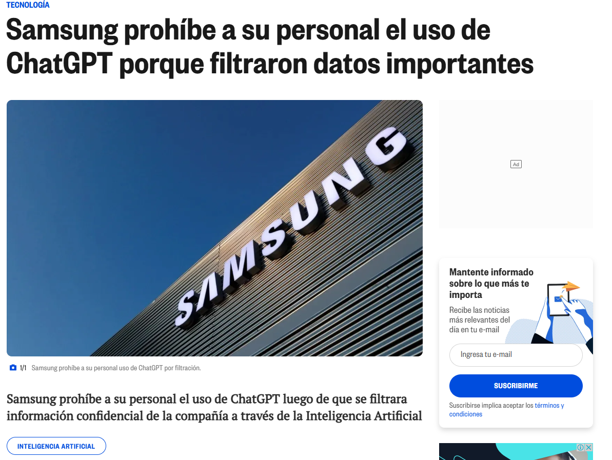

Toma de Decisiones Basadas en Datos e IA
Módulo 3 · Clase 3: Inteligencia Artificial Generativa
mayo 2026
🤖 IA en el día a día


Objetivos de esta clase

🧠 Comprender los LLMs
Qué son, cómo funcionan internamente y qué los hace diferentes de los modelos de ML clásicos.
Qué son, cómo funcionan internamente y qué los hace diferentes de los modelos de ML clásicos.
🤖 Asistentes virtuales y prompts
Cómo comunicarse con precisión con un LLM y sacarle el máximo provecho organizacional.
Cómo comunicarse con precisión con un LLM y sacarle el máximo provecho organizacional.
⚖️ Ética y uso responsable
Límites reales de la IA, riesgos concretos y criterios para tomar mejores decisiones con estas herramientas.
Límites reales de la IA, riesgos concretos y criterios para tomar mejores decisiones con estas herramientas.
Historia y evolución de los LLMs


Representación semántica: tokens
- Semántica significa el sentido o significado de las palabras, no solo sus letras.
- Los LLMs no procesan caracteres ni palabras completas — procesan tokens (fragmentos de texto).
- Un token ≈ 0.75 palabras en inglés. En español, suelen requerirse más tokens por las tildes y morfología.
Aprendizajes clave
- Palabra ≠ Token
- Cada token tiene un ID único en el vocabulario del modelo
- En inglés, 100 tokens ≈ 75 palabras
- Dos palabras iguales pueden tener tokens distintos según el contexto

⚙️ Diagrama técnico de un LLM
Diagrama de funcionamiento de un LLM que se filtró de OpenAI:
¡¡¡No difundir!!!

⚙️ Arquitectura interna: Transformer


Asistentes virtuales inteligentes
Los asistentes virtuales impulsados por LLMs pueden comprender y generar lenguaje natural de forma fluida, lo que los hace útiles para automatizar, resumir, analizar y comunicar en múltiples contextos organizacionales.
Asistentes más destacados en 2026:
- ChatGPT (OpenAI) — el más conocido
- Claude (Anthropic) — foco en análisis y seguridad
- Gemini (Google DeepMind) — integrado con Google Workspace
- Meta AI (Meta) — integrado en WhatsApp e Instagram
- DeepSeek — modelo chino de alto rendimiento

¿Qué pueden hacer estos asistentes?

🎓
Educación: Tutor virtual, explicación de conceptos, generación de ejercicios.
📝
Contenido: Redacción de informes, resúmenes ejecutivos, actas de reunión.
💻
Software: Generación y explicación de código, debugging, documentación.
💬
Atención: Respuestas automáticas, FAQs, soporte de primer nivel.
📊
Análisis: Interpretación de datos, generación de visualizaciones, narrativas de KPIs.
¿Qué es un Prompt?
Un prompt es la instrucción que le das al modelo para que genere una respuesta o realice una tarea.
El modelo toma tus palabras literalmente — la ambigüedad en el prompt produce ambigüedad en la respuesta.
Tipos básicos:
- Pregunta directa: “¿Qué es la inteligencia artificial?”
- Instrucción: “Escribe un resumen ejecutivo de este informe.”
- Comando: “Genera un código Python para calcular la deserción mensual.”
- Rol + Tarea: “Eres un analista senior. Evalúa este plan de acción e identifica los 3 riesgos principales.”

Estructura de un buen prompt

🎯 Actividad: ¡Probemos algunos prompts!

Instrucciones:
- 👩💻 Paso 1: Elige un asistente (ChatGPT, Claude, Gemini, DeepSeek)
- 📝 Paso 2: Escribe el mismo prompt en al menos dos asistentes distintos
- 🔍 Paso 3: Compara las respuestas — ¿difieren en formato, tono, precisión?
- 🤔 Paso 4: Ahora aplica la estructura completa (Rol + Tarea + Contexto + Formato) y observa cómo cambia el resultado
- 💬 Paso 5: Comparte con el grupo: ¿qué diferencias encontraron?
⚠️ Problemas comunes con los LLMs

⚖️ Ética en el uso de la IA


🎉 ¡Gracias por Participar!
❓ ¿Preguntas?
👏 Responder encuesta
🥳 ¡Gracias por el módulo completo!
Contacto:
- 🌐 fralfaro.github.io/portfolio
- 💼 linkedin.com/in/faam
- 📧 francisco.alfaro@usm.cl